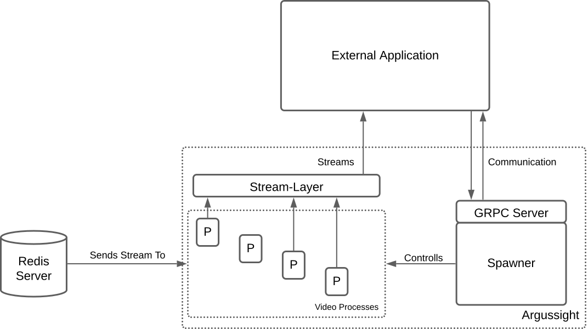

Argussight
Argussight is a versatile video processing tool designed to manage and run multiple streaming processes using one or several input sources. It primarily works with FFmpeg streams, ensuring high compatibility and performance for video processing tasks.
Originally developed as an extension of the video-streamer project by the MXCuBE organization, Argussight can also operate as a standalone application. Its flexible design allows it to be reconfigured for integration with other components, making it adaptable to various use cases.
Design Overview
Argussight is built around four key components, each playing a vital role in its functionality.
Spawner: The core ofArgussight, responsible for controlling, spawning and terminating video processes.GRPC Server: Thightly connected to theSpawner, it handles the communication with a client application.Video processes: Processes that are each running a specific video-related task, like generating or modifying camera streams.Stream-Layer: An abstraction layer positioned between streaming processes and external systems. This layer simplifies access to the streams while enhancing security through port abstraction.

Advantages of using Argussight
Enhanced User Experience: Multiple streams could be displayed at once from the same source, providing a comprehensive view from different angles and/or sources.
Facilitates Usage of Computer Vision Algorithms: Developers can make use of different computer vision algorithms, directly on the images and do not need to handle the complexity of handling video-loading or streaming.
On-the-Fly Configuration: The system can dynamically adjust streams, such as changing parameters for video anlaysis, change position of region of interest or simply switching between views according to user preferences, withou needing to restart or reconfigure the entire process.
Installation
First you need to clone the repository.
git clone https://github.com/walesch-yan/argussight.git
# Navigate to the newly created directory
cd argussight
Optionally, you can create a conda environment for this project
conda env create -f conda-envrionment.yml
If you chose not to, you need to have ffmpeg installed on your system, you can do so via your corresponding package manager.
On Debian-based Linux distributions (Ubuntu, Debian, Pop!_OS, …) for example you can install it like this
sudo apt-get install ffmpeg
Now install the remaining dependencies using pip
# for Development
pip install -e .
# for Usage
pip install .
or poetry
poetry install
Usage
⚠️ Attention ⚠️
If you want to use the
Recorderclass (enabled per default), please be aware that it creates a temporary folder in the location, you start the server at. In the configurations folder, you can change the name of said folder, please make sure that no other folder in your current location has the same name, as it will otherwise delete the contents of that folder (default istemp).
To rename the temporary folder, go to
argussight/core/configurations/processes/savers/video_recorder.yamland change the value oftemp_folder.To disable the
Recorderclass, go toargussight/core/configurations/config.yamland remove the process namedRecorder
Start the Server
Once you installed all the dependencies, you can run the argussight server by using
argussight
command in a terminal window.
Start communication with the GRPC Server
To communicate with the grpc server, you need to establish a connection with the channel. By default the server is running on port 50051 (changeable in the argussight/grpc/server.py file). The code example below shows how to start a connection and get a response for the GetProcessesRequest:
import grpc
import argussight.grpc.argus_service_pb2 as pb2
import argussight.grpc.argus_service_pb2_grpc as pb2_grpc
channel = grpc.insecure_channel("localhost:50051")
stub = pb2_grpc.SpawnerServiceStub(channel)
# try to reach the server
try:
response = stub.GetProcesses(pb2.GetProcessesRequest())
except Exception as e:
# handle exception here
print(e)
Access your streams
To access your streams, you first need a running streaming process. To create one, you need to make a process that inherits the Streamer class. Please refer to the documentation (ToDo) on how to do that. If your class inherits Streamer and is correctly configured in the config.yaml file, the Argussight class will take care of adding every instance of your class to the Abstraction-Layer. To access the streams from outside, you can then create a websocket connection to ws://localhost:7000/ws/${name}, where localhost:7000 is the default location of the Abstraction-Layer (configurable in config.yaml), and name is the unique name of your process instance.